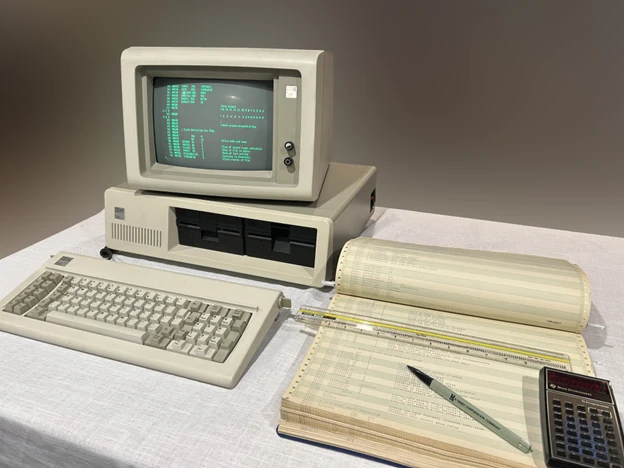
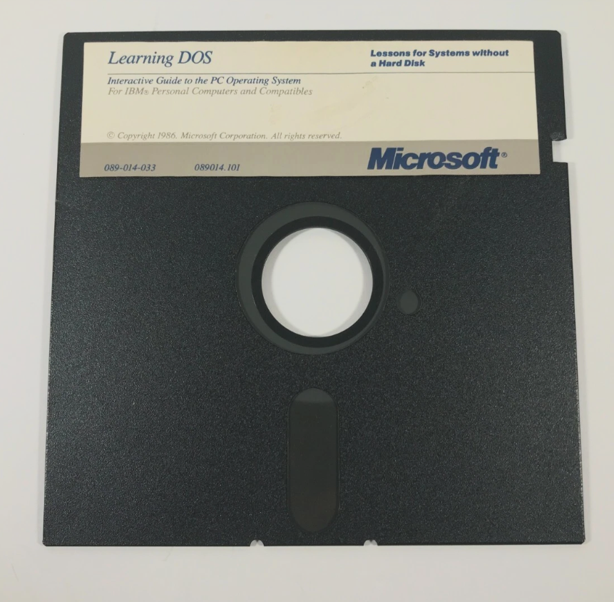
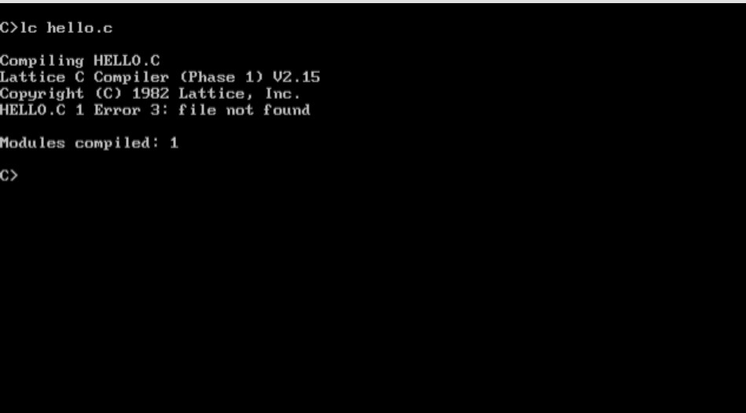

The Hebrew version will be followed by an English one below. Disclaimer: the story is mostly based on memories from 45 years ago. Forgive me for inaccuracies, but feel free to correct me if you remember differently.
לפני כמה ימים שוטטתי בפורומים של תכנות, ופתאום נתקלתי בידיעה באתר הקוד הפתוח של Microsoft: "התגלה עותק של קוד המקור של גרסת ה-DOS המוקדמת ביותר שנמצאה עד היום". מי שרוצה את הסיפור הרשמי יכול לקרוא אותו כאן: Continuing the story of early DOS development. אני באמת לא הולך להסביר כאן מה זה DOS. מי שלא יודע, שישאל את הצ'אט.
יש גם קישור ל-repository ב-GitHub שאמור להכיל את הקוד. נכנסתי, ופתאום, בום. נזרקתי 45 שנה אחורה.

מאמר Microsoft על גילוי קוד DOS המוקדם
הזמן הוא אוגוסט 1981. קיץ. חופש גדול בין כיתה י' לי"א. אבא שלי, אני והאחים הקטנים שלי יושבים בערב בסלון, ובערוץ 1 מופיעה ידיעה חדשותית על כך שה-IBM Personal Computer עומד להגיע לארץ בקרוב. יחסית ל-1981 זה היה די מרשים: ה-IBM PC הוכרז בארצות הברית רק באותו חודש. חיים יבין, או אולי אריה אורגד, מסבירים שזה ישבור את המונופול של ארגונים גדולים על מחשבים.
אני דווקא הייתי ספקן. "מה אתה רוצה להגיד לי, שבכל בית יהיה מחשב? לא הגיוני". אבא שלי, מתוקף היותו קשיש בן 40, ניחן בראייה מפוכחת של המציאות וביכולת מדהימה לניתוח אנליטי של סיטואציות. הוא אמר: "זה עוד כלום. בכל חדר יהיה מחשב". אחרי כמה דקות של מחשבה הוא נעמד והכריז בדרמטיות: "הילדים שלי יהיו הראשונים שיהיה להם כזה, במיוחד אתה, עם הכתב הבלתי קריא שלך. זה יפתור את הבעיה". כן, אז לא אבחנו כלום, אבל כנראה הייתה לי סוג של דיסגרפיה קלה, משהו כמו דיסלקציה, רק בכתיבה.
כמה ימים מאוחר יותר, המחשב הזה מהטלוויזיה נחת אצלנו בבית.
קראו לו IBM PC, בלי תוספות של XT או AT. היה לו מעבד Intel 8088, בן למשפחת x86, עם ארכיטקטורה פנימית של 16 ביט ואפיק חיצוני של 8 ביט. הכל רץ מכונן דיסקטים 5.25 אינץ'. במערכת שהייתה אצלנו לא היה דיסק קשיח; הדיסקטים היו בנפח של כ-160KB.

דיסקטים 5.25 אינץ' ומחשב IBM PC מקורי
מערכת ההפעלה עוד דיווחה על עצמה כ-86-DOS של Seattle Computer Products. זאת החברה שמכרה ל-Bill Gates ולמיקרוסופט את מה שיהפוך בהמשך ל-MS-DOS ול-PC DOS. בפועל זה היה DOS 1.x מוקדם מאוד, אבל מיקרוסופט עוד לא הספיקה, או לפחות כך זה נראה אז, להפוך את כל סימני הזיהוי ל-Microsoft DOS.
באותה תקופה היית אמור לעשות כמעט הכל ב-BASIC. גם את זה אני לא הולך להסביר עכשיו. המחשב הגיע עם מדריך BASIC, ואני התחלתי לתכנת: להעתיק קוד מספר למסך, להריץ, לבנות כמה אפליקציות וכמה משחקים. מהר מאוד הגעתי למגבלות. ה-BASIC הזה הרגיש כמו כלא, גן נעול. הוא מנע גישה ישירה לחומרה, לא באמת התאים לכתיבת דרייברים, ובקיצור היה מעין גרסה קדומה של הנכדים שלו: Visual Basic ו-C#.
הדרך אל החופש התחבאה בספרון אחר שהיה בקופסה: מדריך החומרה. הוא כלל גם הסבר על Assembly language ועל x86 assembly. לימדתי את עצמי לבד, מספרים, בלי דוגמאות מסודרות ובלי אף אחד להתייעץ איתו. אינטרנט לא היה אפילו בטכניון. למדתי לכתוב ישירות לרגיסטרים, לייצר דרייברים, ולבנות כל מיני דברים שנראו לי נחוצים כדי ליצור משחקים חדשים שהתבססו על שירים של Electric Light Orchestra. חגיגה ממש.
אני לא זוכר הכל, אבל זכור לי שאחרי הרבה ימי עבודה הצלחתי לייצר בגרפיקת DOS, כנראה על בסיס CGA, את דמותו המדויקת, לדעתי, של Jeff Lynne, סולן ELO. הוא היה אמור להיות גיבור של משחק שבו עליו לחצות כביש בלי להידרס כדי שיוכל להופיע ב-Olympia London. מאוד נעלבתי כשאבא שלי שאל אם זה נבוכדנצר מלך בבל.
תמונה שלהם להשוואה:
Jeff Lynne מול נבוכדנצר — אתם תחליטו
בטח תשאלו למה לא C. התשובה היא שבאותה נקודת זמן עדיין לא היה לי קומפיילר C זמין ל-DOS. בעולם ה-Unix השפה כבר הייתה קיימת, אבל על IBM PC זה הגיע אליי מאוחר יותר. נחזור ל-C עוד מעט.
בקפיצה קדימה לקוד ש"התגלה": הורדתי אותו, התקנתי אמולטור DOS בשם DOSBox, וקצת התעסקתי עם הסביבה. לא משהו מיוחד. מסתבר ש-DOS וגם Assembly Programming הם כמו רכיבה על אופניים: לא באמת שוכחים.
אחרי כמה דקות העסק עבד. יש כונן Z וירטואלי, ואתה בפרומפט של כונן A, ומשם מתחילים לרוץ.
בנקודה הזאת אני חייב להודות שעיגלתי פינה. בסביבת עבודה היסטורית מדויקת לא תמיד היה לך עורך נוח או תהליך עבודה מסודר. השתמשתי ב-EDLIN, עורך שורה פרימיטיבי כל כך שלידו Vim נראה כמו Visual Studio 2026. רציתי תהליך זורם, לא שחזור מוזיאוני מושלם. במציאות EDLIN הופיע רק בתחילת 1983.
בשנת 1983 אבא שלי הבין שאי אפשר להמשיך כך עם Assembly בלבד. היה לו חבר מהמילואים שהיה גנן ב-מכון ויצמן, והוא ארגן לו פגישה עם מישהו מהמחלקה למדעי המחשב. לא אסגיר את שמו כדי לא להפליל אותו, כי רישיון עלה אז 500 דולר של תחילת שנות השמונים. בעקבות אותה פגישה קיבלנו את הגרסה הראשונה של Lattice C, אחת מסביבות העבודה הראשונות לשפת C על IBM PC. זה לא היה סתם C, זה היה ה-Kernighan and Ritchie C המקורי.

Lattice C — הקומפיילר הראשון שלי
אלו היו חמישה דיסקטים חד-צדדיים של 5.25 אינץ', כל אחד בנפח של 160KB. לא הצלחתי להתקין. לא היה את מי לשאול. אינטרנט כבר היה בטכניון, אבל גם אם הייתה לי גישה אליו, ולא הייתה, Stack Overflow עוד לא נולד. בסוף הבנתי שצריך לשדרג ל-DOS 2.0. משם התחיל מבחינתי עולם השפות העיליות.
And the Rest is History...
בואו נחזור לעניינו, לקוד הישן שהתגלה ולזה שהצלחתי להריץ אותו על סימולטור.
בסך הכל, כל התרגיל הזה סיפק כמה שעות של קורת רוח נוסטלגית: חזרה לגיל 15 או 16, והכרה מחודשת בכמה הזקן ההוא (אז היה בן 40-41) היה (ועודנו) חכם.
ומה למדנו על AI מהתרגיל? שהוא הרגיש אבוד למדי בסביבה הזאת. נתקלתי בכמה באגים. למשל, ברזולוציות מסך מסוימות, כפי שהן מסומלצות ב-DOSBox, EDLIN הפסיק להבין את קוד האסמבלי ודיווח על שגיאת הקלדה על אותה פקודה שברזולוציה אחרת התקבלה היטב. נתתי את כל קוד המקור ואת תצלומי המסך מהסימולטור ל-Claude Code, ל-Ampcode עם Opus, וגם ל-GPT-5.5. אף אחד מהם לא הצליח להבין את הבעיה, וגם אחרי שהסברתי בדיוק מה קורה, לא הצליחו לפתור אותה. מסתבר שיש סביבות שבהן AI פשוט הולך לאיבוד. בכל זאת, 45 שנה.
ומה עם הזקן? הוא ממשיך לעבוד כרגיל 8 שעות ביום במפעל חלקי מטוסים גם בגיל 86, מתכנן ומייצר חלקי מטוסים ומתכנת CNC ב-G-code. הוא משתמש הרבה ב-AI, אמנם עם לא מעט עזרה מהצעירים, אבל זה גם לצורכי עבודה וגם כדי לייצר תמונות משעשעות לחברים שלו בדיור המוגן.
הזקן בפעולה שנת 2026
English Version
A short journey from early DOS, through IBM PC, Assembly and Lattice C, to AI struggling with a 45-year-old environment.
A few days ago I was browsing programming forums and stumbled upon a story on Microsoft's open-source site: "A copy of the source code of the earliest known version of DOS has been discovered." If you want the official story, you can read it here: Continuing the story of early DOS development. I'm really not going to explain what DOS is here. If you don't know, ask your chatbot.
There's also a link to a repository on GitHub that supposedly contains the code. I went in, and suddenly — boom. I was thrown 45 years back.
Microsoft article on the discovery of early DOS code
The time is August 1981. Summer. The long break between 10th and 11th grade. My father, my younger siblings and I are sitting in the living room in the evening, and on Channel 1 there's a news story about the IBM Personal Computer arriving in Israel soon. For 1981, that was pretty impressive — the IBM PC had only been announced in the United States that same month. Haim Yavin, or perhaps Aryeh Orgad, was explaining that this would break the monopoly large organizations had on computers.
I was skeptical. "What are you trying to tell me, that every household will have a computer? That's unreasonable." My father, being an old man of 40, had a sober view of reality and an amazing ability for analytical thinking. He said: "That's nothing. There'll be a computer in every room." After a few minutes of thought he stood up and declared dramatically: "My children will be the first to have one, especially you, with your illegible handwriting. This will solve the problem." Back then we didn't diagnose anything, but I probably had a mild form of dysgraphia — something like dyslexia, but for writing.
A few days later, that computer from TV landed in our home.
It was called the IBM PC — no XT or AT suffix. It had an Intel 8088 processor, part of the x86 family, with a 16-bit internal architecture and an 8-bit external bus. Everything ran from 5.25-inch floppy drives. Our system had no hard disk; the floppies held about 160KB each.
5.25-inch floppy disks and original IBM PC
The operating system still identified itself as 86-DOS by Seattle Computer Products. That's the company that sold Bill Gates and Microsoft what would eventually become MS-DOS and PC DOS. In practice it was a very early DOS 1.x, but Microsoft hadn't yet managed — or so it seemed at the time — to replace all identification marks with Microsoft DOS.
Back then you were supposed to do almost everything in BASIC. I'm not going to explain that either. The computer came with a BASIC manual, and I started programming: copying code from the book to the screen, running it, building a few applications and games. Very quickly I hit the limits. BASIC felt like a prison, a locked garden. It blocked direct hardware access, wasn't really suited for writing drivers — in short, it was an early ancestor of its grandchildren: Visual Basic and C#.
The path to freedom was hiding in another booklet in the box: the hardware manual. It included an explanation of Assembly language and x86 assembly. I taught myself alone, from books, without organized examples and with nobody to consult. There was no Internet — not even at the Technion. I learned to write directly to registers, create drivers, and build all sorts of things I thought were necessary to create new games based on songs by Electric Light Orchestra. Quite the party.
I don't remember everything, but I do remember that after many days of work I managed to create, in DOS graphics — probably based on CGA — an exact likeness, in my opinion, of Jeff Lynne, the ELO frontman. He was supposed to be the hero of a game where he had to cross a road without getting run over so he could perform at Olympia London. I was deeply offended when my father asked if it was Nebuchadnezzar, King of Babylon.
A picture of both for comparison:
Jeff Lynne vs. Nebuchadnezzar — you decide
You're probably asking: why not C? The answer is that at that point in time I didn't have a C compiler available for DOS. In the Unix world the language already existed, but on IBM PC it reached me later. We'll get back to C in a moment.
Fast-forward to the code that was "discovered": I downloaded it, installed a DOS emulator called DOSBox, and played around with the environment a bit. Nothing special. Turns out DOS and Assembly Programming are like riding a bicycle: you never really forget.
After a few minutes everything was working. There's a virtual Z drive, you're at the A drive prompt, and from there you start running.
At this point I have to admit I cut a corner. In a historically accurate work environment you didn't always have a comfortable editor or an orderly workflow. I used EDLIN, a line editor so primitive that next to it Vim looks like Visual Studio 2026. I wanted a flowing process, not a perfect museum reconstruction. In reality, EDLIN only appeared in early 1983.
In 1983 my father realized we couldn't continue with Assembly alone. He had a friend from army reserves who was a gardener at the Weizmann Institute, and he arranged a meeting with someone from the Computer Science department. I won't reveal his name so as not to incriminate him, because a license cost $500 in early-1980s dollars. As a result of that meeting we received the first version of Lattice C, one of the first C development environments for the IBM PC. It wasn't just any C — it was the original Kernighan and Ritchie C.
Lattice C — my first compiler
Those were five single-sided 5.25-inch floppies, each holding 160KB. I couldn't install it. There was nobody to ask. The Internet already existed at the Technion, but even if I'd had access — and I didn't — Stack Overflow hadn't been born yet. Eventually I figured out I needed to upgrade to DOS 2.0. That's where the world of high-level languages began for me.
And the Rest is History...
Let's get back to the point — the old code that was discovered, and the fact that I managed to run it on a simulator.
All in all, this exercise provided a few hours of nostalgic pleasure: going back to age 15 or 16, and a renewed recognition of how smart that old man (he was 40–41 then) was (and still is).
And what did we learn about AI from this exercise? That it felt quite lost in this environment. I encountered several bugs. For example, at certain screen resolutions as simulated in DOSBox, EDLIN stopped understanding the assembly code and reported a typing error for the same command that was accepted perfectly at a different resolution. I gave all the source code and simulator screenshots to Claude Code, to Ampcode with Opus, and also to GPT-5.5. None of them managed to understand the problem, and even after I explained exactly what was happening, they couldn't solve it. Turns out there are environments where AI simply gets lost. After all, 45 years.
And what about the old man? He continues to work a regular 8-hour day at an aircraft parts factory, even at age 86, designing and manufacturing aircraft parts and programming CNC in G-code. He uses AI a lot — admittedly with quite a bit of help from the younger generation — but it's for both work purposes and to create amusing images for his friends in the assisted-living residence.